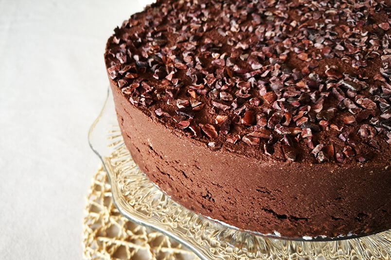
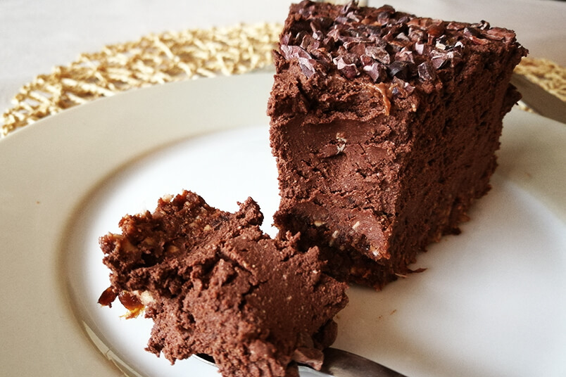

Przygotowanie tofurnika jest nawet prostsze niż wykonanie tradycyjnego sernika. W przypadku klasycznej wersji z serem, najpierw trzeba go zmielić i to najlepiej kilka razy. Jest to proces bardzo czasochłonny. Można użyć gotowej mieszanki sernikowej, ale w niej znajduje się sporo syfu, którego nie chcemy jeść. W przypadku tofurnika, wystarczy jedynie zblendować wszystkie składniki, co jest bardzo wygodnym rozwiązaniem. A poza tym, CIASTO JEST BOSKIE! Będzie to najlepsze czekoladowe ciasto bez pieczenia jakie kiedykolwiek zjesz 🙂 Gwarantuję!
 
Przygowanie
Czas w sumie
1 godzina
1 godzina
Porcje : 1 tort
SKŁADNIKI
SPÓD
250g migdałów (namoczonych przez noc)
75g stopionego oleju kokosowego
100g suszonych śliwek
50g wiórków kokosowych
50g cukru kokosowego
½ łyżeczki soli
MASA SERNIKOWA
4 kostki naturalnego tofu (4 x 180g)
250g syropu klonowego
100g kakao
125g oleju kokosowego
2 szczypty płatków chilli
½ łyżeczki soli
DEKORACJA
kruszone surowe ziarna kakao, wiórki kokosowe lub ulubione bakalie
WYKONANIE
SPÓD
Migdały i stopiony olej kokosowy zblenduj przy pomocy robota kuchennego lub blendera na miękką i klejącą masę. Blenduj aż wszystkie składniki się połączą. Nie miksuj jednak zbyt długo. Zrób tak by widoczne były większe kawałki migdałów, które będą przyjemnie chrupały. Tak przygotowanym spodem wylep dno formy (21cm), przysypanej wiórkami kokosowymi. Wstaw do lodówki.
MASA SERNIKOWA
Tofu zawiń w czysty ręcznik kuchenny i wyduś z tofu jak najwięcej wody ile się Tobie uda. Jest to bardzo ważne wy wykręcić jak najwięcej wilgoci. Dzięki temu tofurnik będzie gęsty i zwarty. Tofu wykręcone z wody przełóż do dużej miski, dodaj ziarenka z laski 1 wanilii, syrop klonowy, kakao, stopiony olej kokosowy, płatki chilli oraz sól. Dokładnie zblenduj wszystkie składniki na bardzo gęstą i kremową masę. Im dłużej będziesz blendować tym lepiej - cierpliwość się opłaci.
Gotową masę z tofu przełóż na wcześniej przygotowany spód, dokładnie uklep i wygładź powierzchnię.